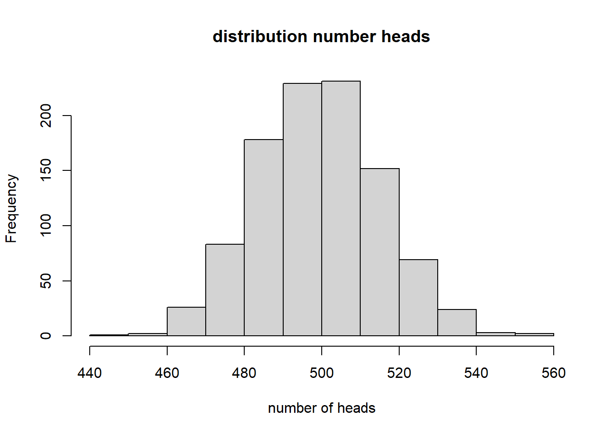
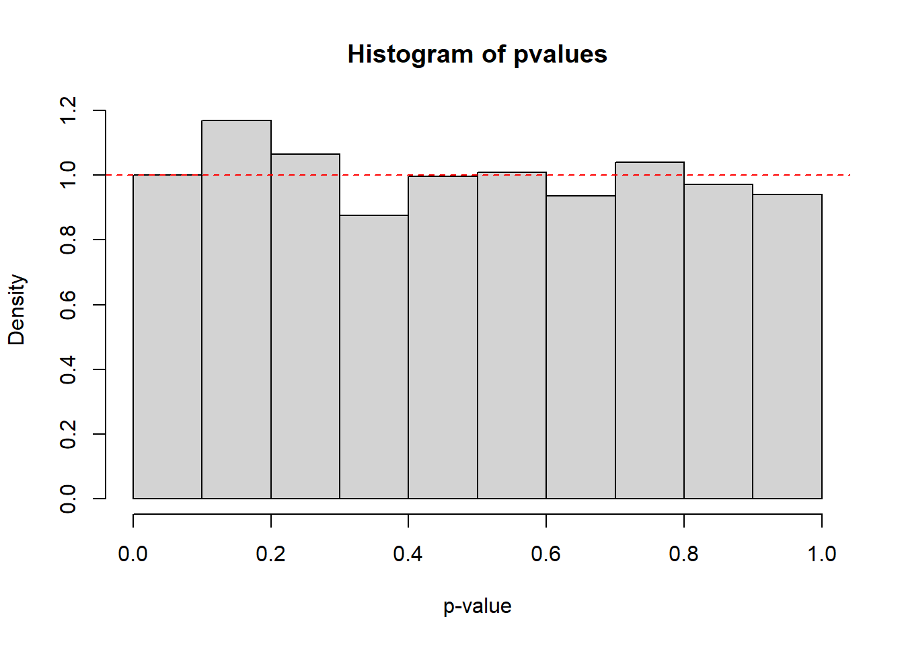

statstutorial
brockad
2020-09-16
Last updated: 2020-09-16
Checks: 6 1
Knit directory: BioQ6Tutorials/
This reproducible R Markdown analysis was created with workflowr (version 1.6.2). The Checks tab describes the reproducibility checks that were applied when the results were created. The Past versions tab lists the development history.
The R Markdown is untracked by Git. To know which version of the R Markdown file created these results, you’ll want to first commit it to the Git repo. If you’re still working on the analysis, you can ignore this warning. When you’re finished, you can run wflow_publish to commit the R Markdown file and build the HTML.
Great job! The global environment was empty. Objects defined in the global environment can affect the analysis in your R Markdown file in unknown ways. For reproduciblity it’s best to always run the code in an empty environment.
The command set.seed(20200915) was run prior to running the code in the R Markdown file. Setting a seed ensures that any results that rely on randomness, e.g. subsampling or permutations, are reproducible.
Great job! Recording the operating system, R version, and package versions is critical for reproducibility.
Nice! There were no cached chunks for this analysis, so you can be confident that you successfully produced the results during this run.
Great job! Using relative paths to the files within your workflowr project makes it easier to run your code on other machines.
Great! You are using Git for version control. Tracking code development and connecting the code version to the results is critical for reproducibility.
The results in this page were generated with repository version e76843f. See the Past versions tab to see a history of the changes made to the R Markdown and HTML files.
Note that you need to be careful to ensure that all relevant files for the analysis have been committed to Git prior to generating the results (you can use wflow_publish or wflow_git_commit). workflowr only checks the R Markdown file, but you know if there are other scripts or data files that it depends on. Below is the status of the Git repository when the results were generated:
Ignored files:
Ignored: .Rhistory
Ignored: .Rproj.user/
Untracked files:
Untracked: analysis/statstutorial.Rmd
Untracked: data/Chicago_Crimes_2016.csv
Untracked: data/FoxEtAl.csv
Untracked: data/Obama_Tweets_2016.csv
Untracked: data/Trump_Tweets_2016.csv
Unstaged changes:
Modified: analysis/index.Rmd
Note that any generated files, e.g. HTML, png, CSS, etc., are not included in this status report because it is ok for generated content to have uncommitted changes.
There are no past versions. Publish this analysis with wflow_publish() to start tracking its development.
Introduction
This tutorial will cover statistical analysis utilizing R, with a focus on working with large data sets.
Load packages:
library(tidyverse)-- Attaching packages ---------------------------------------------- tidyverse 1.3.0 --v ggplot2 3.3.2 v purrr 0.3.4
v tibble 3.0.3 v dplyr 1.0.2
v tidyr 1.1.2 v stringr 1.4.0
v readr 1.3.1 v forcats 0.5.0-- Conflicts ------------------------------------------------- tidyverse_conflicts() --
x dplyr::filter() masks stats::filter()
x dplyr::lag() masks stats::lag()library(qvalue)
library(utils)Here’s the introduction to hypothesis testing with the example of flipping a fair coin 1000 times. The null hypothesis is the contradiction to the hypothesis you would like to “prove”. E.g. if you want to show that one drug is better than another, the null hypothesis is that the drug is the same or worse than the other.
Simple hypothesis testing:
set.seed(222) #Reproducibility
p_coin <- 0.5 #Probability of a head (fair coin)
flips <- 1000 #Number of times we flip the coin
data_coin <- sample(c("H", "T"), flips,
prob = c(p_coin, 1 - p_coin),
replace = TRUE)
heads <- sum(data_coin == "H")
#Alternate method
#heads <- rbinom(1, flips, p_coin)
one.sided.pvalue <- 1 - pbinom(494, flips, 0.5)
one.sided.pvalue[1] 0.6360142heads_distribution <- rbinom(1000, flips,
p_coin)
pvalue <- binom.test(heads, flips, 0.5,
alternative = "two.sided")
hist(heads_distribution, main = "distribution number heads", xlab = "number of heads")
Type I (false positives) and Type II errors (false negatives)
value distributions:
ncoins <- 2500
heads <- rbinom(ncoins, flips, p_coin)
pvalues <- 1 - pbinom(heads, flips, 0.5)
hist(pvalues, xlab = "p-value", freq = FALSE)
abline(h = 1, col = "red", lty = 2)
Biased coins:
p_b1 <- 0.52 #The coin is biased
heads_b1 <- rbinom(ncoins, flips, p_b1)
pvalues <- 1 - pbinom(heads_b1, flips, 0.5)
hist(pvalues, xlab = "p-value", freq = FALSE)
abline(h = 1, col = "red", lty = 2)
p_b2 <- 0.55 #The coin is biased
heads_b2 <- rbinom(ncoins, flips, p_b2)
pvalues <- 1 - pbinom(heads_b2, flips, 0.5)
hist(pvalues, xlab = "p-value", freq = FALSE)
abline(h = 1, col = "red", lty = 2)
FWER (family-wise error rate) can account for multiple testing. FWER less than or equal to ma, where m is number of tests and a is p-value significance level. With p-value significance value of 0.05, alpha = 0.05/m.
#Bonferroni correction adjusted p-value = number of tests * p-value. This method is VERY stringent
original_pvals <- c(0.012, 0.06, 0.77, 0.001, 0.32)
adjusted_pvals <- p.adjust(original_pvals, method = "bonferroni")
adjusted_pvals[1] 0.060 0.300 1.000 0.005 1.000#Holm-bonferroni (or Holm method) is a little more relaxed than the bonferroni method aloneExample: testing mixed coins
toss_coins <- function(p, flips){
# toss a coin with probability p of landing on head several times
# return a data frame with p, number of heads, pval and
# H0 = TRUE if p = 0.5 and FALSE otherwise
heads <- rbinom(1, flips, p)
pvalue <- 1 - pbinom(heads, flips, 0.5)
if (p == 0.5){
return(data.frame(p = p, heads = heads, pval = pvalue, H0 = TRUE))
} else {
return(data.frame(p = p, heads = heads, pval = pvalue, H0 = FALSE))
}
}
# To ensure everybody gets the same results, we're setting the seed
set.seed(8)
data <- data.frame()
# the biased coins
for (i in 1:50) data <- rbind(data, toss_coins(0.55, 1000))
# the fair coins
for (i in 1:950) data <- rbind(data, toss_coins(0.5, 1000))
# here's the data structure
head(data) p heads pval H0
1 0.55 535 1.235282e-02 FALSE
2 0.55 558 1.061983e-04 FALSE
3 0.55 567 9.546428e-06 FALSE
4 0.55 532 1.988964e-02 FALSE
5 0.55 547 1.322765e-03 FALSE
6 0.55 574 1.178147e-06 FALSEget_table <- function(data, adjust, alpha = 0.05){
# produce a table counting U, V, T and S
# after adjusting p-values for multiple comparisons
data$pval.adj <- p.adjust(data$pval, method = adjust)
data$reject <- FALSE
data$reject[data$pval.adj < alpha] <- TRUE
return(table(data[,c("reject","H0")]))
}
no_adjustment <- get_table(data, adjust = "none", 0.05)
print(no_adjustment) H0
reject FALSE TRUE
FALSE 2 905
TRUE 48 45#Bonferroni correction: Power is only 20% now
bonferroni <- get_table(data, adjust = "bonferroni", 0.05)
print(bonferroni) H0
reject FALSE TRUE
FALSE 40 950
TRUE 10 0#Holm correction: Power is still only 20%
holm <- get_table(data, adjust = "holm", 0.05)
print(holm) H0
reject FALSE TRUE
FALSE 40 950
TRUE 10 0BH <- get_table(data, adjust = "BH", 0.05)
print(BH) H0
reject FALSE TRUE
FALSE 17 946
TRUE 33 4FDR and q-values are appropriate when you expect a large number of significant results.
q values:
hist(data$pval, breaks = 25)
qobj <- qvalue(p = data$pval)
hist(qobj)
table((qobj$pvalues < 0.05) & (qobj$qvalues < 0.05), data$H0)
FALSE TRUE
FALSE 17 946
TRUE 33 4Linear regression, logistic regression, and model selection
Linear regression:
#Generate data
set.seed(5)
x <- 1:20
y <- 3 + 0.5 * x + rnorm(20)
plot(y ~ x)
#Generate a model via linear regression
model1 <- lm(y ~ x)
summary(model1)
Call:
lm(formula = y ~ x)
Residuals:
Min 1Q Median 3Q Max
-1.58733 -0.53439 -0.05563 0.40359 1.76021
Coefficients:
Estimate Std. Error t value Pr(>|t|)
(Intercept) 3.16195 0.42731 7.40 7.31e-07 ***
x 0.45786 0.03567 12.84 1.70e-10 ***
---
Signif. codes: 0 '***' 0.001 '**' 0.01 '*' 0.05 '.' 0.1 ' ' 1
Residual standard error: 0.9199 on 18 degrees of freedom
Multiple R-squared: 0.9015, Adjusted R-squared: 0.896
F-statistic: 164.8 on 1 and 18 DF, p-value: 1.695e-10plot(y~x)
points(model1$fitted.values~x, type = "l", col = "blue")
#Generate polynomial model
model2 <- lm(y ~ poly(x, 7))
#Compare the models
summary(model1)
Call:
lm(formula = y ~ x)
Residuals:
Min 1Q Median 3Q Max
-1.58733 -0.53439 -0.05563 0.40359 1.76021
Coefficients:
Estimate Std. Error t value Pr(>|t|)
(Intercept) 3.16195 0.42731 7.40 7.31e-07 ***
x 0.45786 0.03567 12.84 1.70e-10 ***
---
Signif. codes: 0 '***' 0.001 '**' 0.01 '*' 0.05 '.' 0.1 ' ' 1
Residual standard error: 0.9199 on 18 degrees of freedom
Multiple R-squared: 0.9015, Adjusted R-squared: 0.896
F-statistic: 164.8 on 1 and 18 DF, p-value: 1.695e-10summary(model2)
Call:
lm(formula = y ~ poly(x, 7))
Residuals:
Min 1Q Median 3Q Max
-1.6066 -0.4714 -0.1719 0.4577 1.6960
Coefficients:
Estimate Std. Error t value Pr(>|t|)
(Intercept) 7.96944 0.23826 33.448 3.24e-13 ***
poly(x, 7)1 11.80701 1.06553 11.081 1.17e-07 ***
poly(x, 7)2 -0.13536 1.06553 -0.127 0.901
poly(x, 7)3 0.82397 1.06553 0.773 0.454
poly(x, 7)4 0.28455 1.06553 0.267 0.794
poly(x, 7)5 0.81336 1.06553 0.763 0.460
poly(x, 7)6 -0.40726 1.06553 -0.382 0.709
poly(x, 7)7 0.03159 1.06553 0.030 0.977
---
Signif. codes: 0 '***' 0.001 '**' 0.01 '*' 0.05 '.' 0.1 ' ' 1
Residual standard error: 1.066 on 12 degrees of freedom
Multiple R-squared: 0.9119, Adjusted R-squared: 0.8605
F-statistic: 17.74 on 7 and 12 DF, p-value: 1.917e-05plot(y~x)
points(model1$fitted.values~x, type = "l", col = "blue")
points(model2$fitted.values~x, type = "l", col = "red")
#Log-likelihood, measure fit to models
logLik(model1)'log Lik.' -25.65474 (df=3)logLik(model2)'log Lik.' -24.54 (df=9)#AIC Smaller values are "better"
AIC(model1)[1] 57.30948AIC(model2)[1] 67.08001#BIC Smaller values are "better"
BIC(model1)[1] 60.29667BIC(model2)[1] 76.0416# read the data
reviews <- read.csv("data/FoxEtAl.csv", sep = "\t")
# take a peek
head(reviews) Sort Journal msID Year ReviewerID ReviewerInvited ReviewerResponded
1 1 Evolution 34152 2007 8426852 1 1
2 2 Evolution 34152 2007 8425970 1 1
3 3 Evolution 34152 2007 8425116 1 1
4 4 Evolution 34152 2007 8426128 1 1
5 5 Evolution 34152 2007 9327585 1 1
6 6 Evolution 34152 2007 8423528 1 1
ReviewerAgreed ReviewerAssigned ReviewSubmitted
1 0 0 NA
2 0 0 NA
3 0 0 NA
4 0 0 NA
5 1 1 1
6 0 0 NA# set NAs to 0
reviews[is.na(reviews)] <- 0
# how big is the data?
dim(reviews)[1] 113876 10# that's a lot! Let's take 5000 review invitations for our explorations;
# we will fit the whole data set later
set.seed(101)
small <- reviews[order(runif(nrow(reviews))),][1:5000,]
#Constant rate
# suppose the rate at which reviewers agree is a constant
mean(small$ReviewerAgreed)[1] 0.466# fit a logistic regression
model_null <- glm(ReviewerAgreed~1, data = small, family = "binomial")
summary(model_null)
Call:
glm(formula = ReviewerAgreed ~ 1, family = "binomial", data = small)
Deviance Residuals:
Min 1Q Median 3Q Max
-1.120 -1.120 -1.120 1.236 1.236
Coefficients:
Estimate Std. Error z value Pr(>|z|)
(Intercept) -0.13621 0.02835 -4.805 1.55e-06 ***
---
Signif. codes: 0 '***' 0.001 '**' 0.01 '*' 0.05 '.' 0.1 ' ' 1
(Dispersion parameter for binomial family taken to be 1)
Null deviance: 6908.3 on 4999 degrees of freedom
Residual deviance: 6908.3 on 4999 degrees of freedom
AIC: 6910.3
Number of Fisher Scoring iterations: 3# interpretation:
exp(model_null$coefficients[1]) / (1 + exp(model_null$coefficients[1]))(Intercept)
0.466 #Declining trend
# Take 2003 as baseline
model_year <- glm(ReviewerAgreed~I(Year - 2003), data = small, family = "binomial")
#The I() function acts to convert the argument to "as.is"
summary(model_year)
Call:
glm(formula = ReviewerAgreed ~ I(Year - 2003), family = "binomial",
data = small)
Deviance Residuals:
Min 1Q Median 3Q Max
-1.3441 -1.0879 -0.9686 1.2372 1.4017
Coefficients:
Estimate Std. Error z value Pr(>|z|)
(Intercept) 0.383697 0.065482 5.860 4.64e-09 ***
I(Year - 2003) -0.074753 0.008491 -8.804 < 2e-16 ***
---
Signif. codes: 0 '***' 0.001 '**' 0.01 '*' 0.05 '.' 0.1 ' ' 1
(Dispersion parameter for binomial family taken to be 1)
Null deviance: 6908.3 on 4999 degrees of freedom
Residual deviance: 6829.7 on 4998 degrees of freedom
AIC: 6833.7
Number of Fisher Scoring iterations: 4#Journal dependence
# Take the first journal as baseline
model_journal <- glm(ReviewerAgreed~Journal, data = small, family = "binomial")
summary(model_journal)
Call:
glm(formula = ReviewerAgreed ~ Journal, family = "binomial",
data = small)
Deviance Residuals:
Min 1Q Median 3Q Max
-1.208 -1.110 -1.033 1.247 1.329
Coefficients:
Estimate Std. Error z value Pr(>|z|)
(Intercept) 0.07187 0.06812 1.055 0.29141
JournalFE -0.27908 0.09411 -2.965 0.00302 **
JournalJANIM -0.16544 0.09598 -1.724 0.08476 .
JournalJAPPL -0.23319 0.09323 -2.501 0.01237 *
JournalJECOL -0.26183 0.09403 -2.785 0.00536 **
JournalMEE -0.42223 0.12868 -3.281 0.00103 **
---
Signif. codes: 0 '***' 0.001 '**' 0.01 '*' 0.05 '.' 0.1 ' ' 1
(Dispersion parameter for binomial family taken to be 1)
Null deviance: 6908.3 on 4999 degrees of freedom
Residual deviance: 6892.7 on 4994 degrees of freedom
AIC: 6904.7
Number of Fisher Scoring iterations: 3#Model journal and year
# Take the first journal as baseline, the colon mark stands for interaction term only.
model_journal_yr <- glm(ReviewerAgreed~Journal:I(Year-2003),
data = small, family = "binomial")
#summary(model_journal_yr)
#Likelihoods
logLik(model_null)'log Lik.' -3454.167 (df=1)logLik(model_year)'log Lik.' -3414.845 (df=2)logLik(model_journal)'log Lik.' -3446.335 (df=6)logLik(model_journal_yr)'log Lik.' -3395.365 (df=7)#AIC
AIC(model_null)[1] 6910.334AIC(model_year)[1] 6833.691AIC(model_journal)[1] 6904.669AIC(model_journal_yr)[1] 6804.73#BIC
BIC(model_null)[1] 6916.851BIC(model_year)[1] 6846.725BIC(model_journal)[1] 6943.772BIC(model_journal_yr)[1] 6850.35#Cross validation
reviews$cv <- sample(1:3, nrow(reviews), prob = c(0.05, 0.75, 0.2), replace = TRUE)
dataexplore <- reviews[reviews$cv == 1,]
datafit <- reviews[reviews$cv == 2,]
datatest <- reviews[reviews$cv == 3,]
# We've already done our exploration.
# Let's fit the data using model_journal
# and model_journal_yr, which seem to be the most promising
cv_model1 <- glm(ReviewerAgreed~I(Year-2003), data = datafit, family = "binomial")
cv_model2 <- glm(ReviewerAgreed~Journal:I(Year-2003), data = datafit,
family = "binomial")
mymodel <- cv_model1
# compute probabilities
pi <- predict(mymodel, newdata = datatest, type = "resp")
# compute log likelihood
mylogLik <- sum(datatest$ReviewerAgreed * log(pi) +
(1 - datatest$ReviewerAgreed) * log(1 - pi))
print(mylogLik)[1] -15520.91mymodel <- cv_model2
# compute probabilities
pi <- predict(mymodel, newdata = datatest, type = "resp")
# compute log likelihood
mylogLik <- sum(datatest$ReviewerAgreed * log(pi) +
(1 - datatest$ReviewerAgreed) * log(1 - pi))
print(mylogLik)[1] -15473.93Challenge:
#Example code
#read the Dataset sheet into “R”. The dataset will be called "data".
data <- read.csv("https://opendata.ecdc.europa.eu/covid19/casedistribution/csv",
na.strings = "", fileEncoding = "UTF-8-BOM")
# the code below shows how you may recode the country name's
# first letter to a numeric alphabetic position.
data1 <- data[(data$dateRep=="11/08/2020"), ]
CountryAb <- as.integer(as.factor(substr(data1$countriesAndTerritories,1,1)))
# build a linear model for the relationship between
# Cumulative_number_for_14_days_of_COVID.19_cases_per_100000 and
# the alphabetic position of country name's first letter.
model1<- lm(Cumulative_number_for_14_days_of_COVID.19_cases_per_100000~CountryAb,
data=data1)
summary(model1)
Call:
lm(formula = Cumulative_number_for_14_days_of_COVID.19_cases_per_100000 ~
CountryAb, data = data1)
Residuals:
Min 1Q Median 3Q Max
-53.39 -44.93 -35.41 7.73 427.28
Coefficients:
Estimate Std. Error t value Pr(>|t|)
(Intercept) 53.8412 10.0520 5.356 2.25e-07 ***
CountryAb -0.4541 0.7908 -0.574 0.566
---
Signif. codes: 0 '***' 0.001 '**' 0.01 '*' 0.05 '.' 0.1 ' ' 1
Residual standard error: 78.74 on 207 degrees of freedom
Multiple R-squared: 0.00159, Adjusted R-squared: -0.003233
F-statistic: 0.3297 on 1 and 207 DF, p-value: 0.5664# On 8/11/2020, we did not find a significant relationship
# between alphabetic order of country name and COVID-19 cases.
# But what if we keep looking at other dates?
sessionInfo()R version 4.0.2 (2020-06-22)
Platform: x86_64-w64-mingw32/x64 (64-bit)
Running under: Windows 10 x64 (build 18363)
Matrix products: default
locale:
[1] LC_COLLATE=English_United States.1252
[2] LC_CTYPE=English_United States.1252
[3] LC_MONETARY=English_United States.1252
[4] LC_NUMERIC=C
[5] LC_TIME=English_United States.1252
attached base packages:
[1] stats graphics grDevices utils datasets methods base
other attached packages:
[1] qvalue_2.20.0 forcats_0.5.0 stringr_1.4.0 dplyr_1.0.2
[5] purrr_0.3.4 readr_1.3.1 tidyr_1.1.2 tibble_3.0.3
[9] ggplot2_3.3.2 tidyverse_1.3.0
loaded via a namespace (and not attached):
[1] tidyselect_1.1.0 xfun_0.17 reshape2_1.4.4 splines_4.0.2
[5] haven_2.3.1 colorspace_1.4-1 vctrs_0.3.4 generics_0.0.2
[9] htmltools_0.5.0 yaml_2.2.1 blob_1.2.1 rlang_0.4.7
[13] later_1.1.0.1 pillar_1.4.6 withr_2.2.0 glue_1.4.2
[17] DBI_1.1.0 dbplyr_1.4.4 modelr_0.1.8 readxl_1.3.1
[21] plyr_1.8.6 lifecycle_0.2.0 munsell_0.5.0 gtable_0.3.0
[25] workflowr_1.6.2 cellranger_1.1.0 rvest_0.3.6 evaluate_0.14
[29] labeling_0.3 knitr_1.29 httpuv_1.5.4 fansi_0.4.1
[33] broom_0.7.0 Rcpp_1.0.5 promises_1.1.1 backports_1.1.9
[37] scales_1.1.1 jsonlite_1.7.1 farver_2.0.3 fs_1.5.0
[41] hms_0.5.3 digest_0.6.25 stringi_1.5.3 rprojroot_1.3-2
[45] grid_4.0.2 cli_2.0.2 tools_4.0.2 magrittr_1.5
[49] crayon_1.3.4 pkgconfig_2.0.3 ellipsis_0.3.1 xml2_1.3.2
[53] reprex_0.3.0 lubridate_1.7.9 assertthat_0.2.1 rmarkdown_2.3
[57] httr_1.4.2 rstudioapi_0.11 R6_2.4.1 git2r_0.27.1
[61] compiler_4.0.2